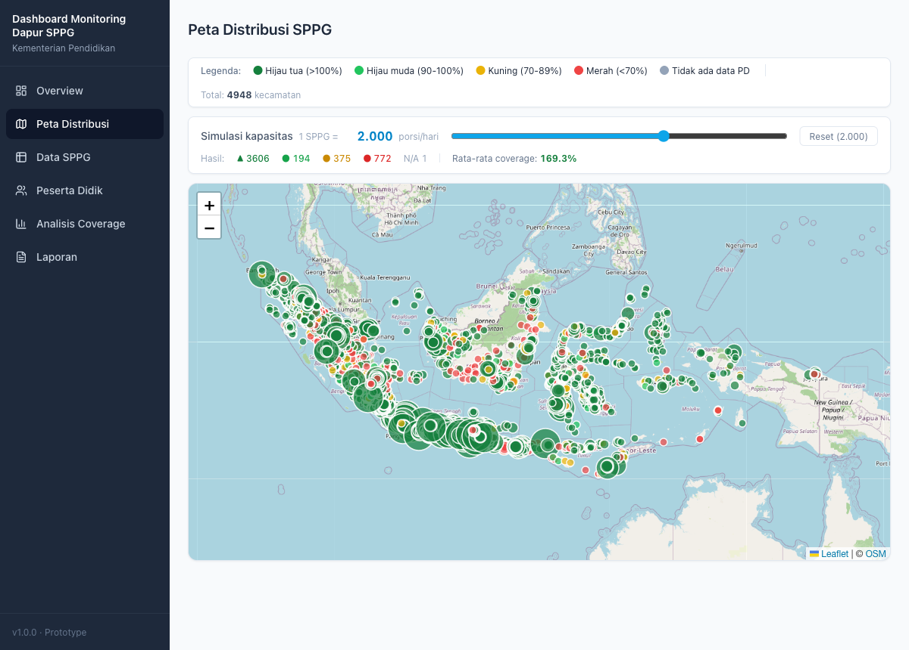

Vibe Coding 101
Membangun perangkat lunak nyata bersama agent — dari menyiapkan lingkungan sampai ngoding bareng.
- 01Sharing pengalaman
cerita dari proyek nyata. - 02Mengenal Claude Code environment
CLAUDE.md, skills, MCP, hooks. - 03Prompt project & review
menulis prompt tepat & bedah hasilnya.
- 04Note taking & tanya jawab
catat insight & diskusi. - 05Let's Get Vibing
ngoding langsung, bareng.
Membangun Dashboard
bersama Claude Code
Studi kasus nyata: dashboard coverage SPPG — membandingkan jumlah dapur Makan Bergizi Gratis dengan populasi penerima (peserta didik PAUD & SD) di tiap kecamatan se-Indonesia.
Struktur yang membuat agent paham proyek
Bukan sekadar folder kode. Tiap bagian memberi konteks ke Claude: di mana logika, di mana data, di mana aturan.
- Pemisahan jelas. Backend, frontend, infrastruktur, dan data hidup di rumahnya masing-masing.
- Dapat dijalankan. Struktur ini bukan teori — DB, API, dan dashboard benar-benar menyala.
- Self-documenting. docs/ berisi standar kode, proses bisnis, SRS, dan diagram mermaid (alur + ERD).
CLAUDE.md & Skills — memori & keahlian
CLAUDE.md
Dibaca tiap sesi. Berisi peta folder, perintah dev, alur data, dan aturan domain yang tak bisa ditebak dari kode saja.
4 Skill proyek
Pengetahuan spesifik repo, dipanggil saat relevan:
- →node-express-api — pola endpoint, try/catch, view bersih.
- →vue-dashboard-ui — halaman, peta, warna tier.
- →sppg-data-pipeline — scrape → clean → import.
- →db-migrations — skema & view idempoten.
Tools & disiplin: MCP + Diagnostic Gate
code-review-graph (MCP)
Tree-sitter → graph SQLite dari seluruh kode. Claude membaca hanya yang relevan + cek blast-radius sebelum mengubah fungsi.
Diagnostic Gate
Hook otomatis tiap kali kode berubah — agent diingatkan menjalankan urutan ini sebelum tes browser:
- 1LSP diagnostics — perbaiki error bahasa.
- 2Unit test — node --test harus hijau.
- 3Tes browser — Playwright / Chrome.
01 Fondasi: database yang sudah ada
Kita mulai dari data nyata di PostgreSQL — 24k SPPG, 7k kecamatan DAPODIK, tabel pemetaan & koordinat. Tugas pertama: pahami skema, lalu bersihkan.
02 Backend API & logika coverage
Express + pg menyajikan /api/*. Inti bisnis — kapasitas, persentase, tier — jadi satu sumber-kebenaran yang diuji unit test.
03 Dashboard Vue & peta sebaran
Vue 3 + Vite + Tailwind. Tabel, ringkasan, dan peta Leaflet yang mewarnai tiap kecamatan sesuai tier coverage — bahasa visual yang sama dari ujung ke ujung.

04 Loop kualitas: diagnose → uji → lacak
Tiap perubahan kode melewati gerbang yang sama. code-review-graph melacak dampaknya. Inilah yang menjaga proyek tetap presisi & minim bug.
Tulis
Edit oleh Claude. Hook PostToolUse aktif.
Diagnose
LSP cek bahasa — error nyata diperbaiki.
Uji
node --test + smoke test endpoint.
Lacak
graph update; cek di browser bila lolos.
Yang membuat vibe coding berhasil
- Konteks dulu, kode kemudian. CLAUDE.md + skills membuat agent paham aturan domain.
- Disiplin terotomasi. Diagnostic gate & unit test menangkap bug lebih awal.
- Struktur yang jujur. Pemisahan folder mencerminkan tanggung jawab nyata.
Catatan untuk diisi
Ruang untuk poin diskusi Anda: pelajaran, tantangan data, atau langkah berikutnya proyek SPPG.
Diskusi &
Tanya Jawab
Mari telusuri kode bersama — backend, frontend, atau pipeline data. Semua siap dijalankan langsung dari folder proyek.